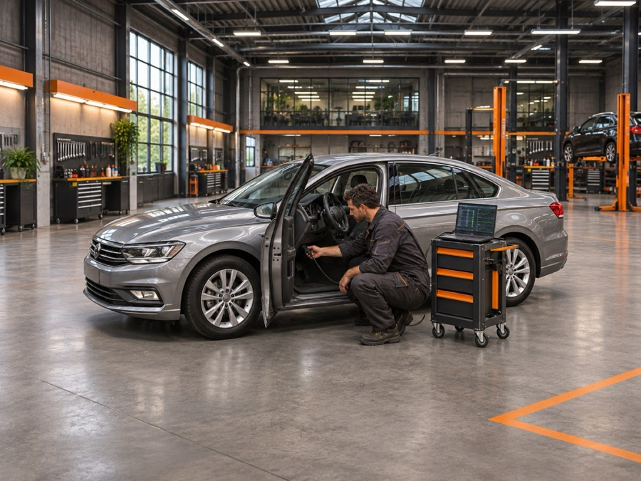

Autodijagnostika u Zaprešiću
Kompjutersko očitanje grešaka i analiza kvarova na motoru i ostalim sustavima vozila - brzo, precizno, za sve marke.

Kompjuterska dijagnostika kvarova
Upaljena lampica motora (check engine) ili čudno ponašanje vozila gotovo uvijek ostavlja trag u elektronici automobila. Pomoću dijagnostičke opreme očitavamo pohranjene greške (OBD kodove) i provjeravamo rad senzora i aktuatora na vozilu.
Na temelju nalaza dobivate jasan izvještaj i preporuku za popravak, bez nagađanja i nepotrebne zamjene dijelova. Dijagnostika se isplati i prije većih zahvata - precizno utvrđen uzrok kvara često uštedi na nepotrebnoj zamjeni dijelova koji nisu krivi za problem.
Dijagnostiku preporučujemo i prije kupnje rabljenog vozila - provjera elektronike i pohranjenih grešaka otkriva skrivene probleme koje je teško primijetiti na test-vožnji. Usluga je dostupna i klijentima iz Brdovca, Marije Gorice, Luke, Pušće i šire zagrebačke okolice.
- Računalno očitanje grešaka (OBD)
- Provjera senzora i aktuatora
- Analiza lampice motora (check engine)
- Izvještaj i preporuka popravka
- Brzo, bez dugog čekanja na termin
- Dijagnostika prije kupnje rabljenog vozila
- Provjera upravljačkih jedinica (motor, ABS, airbag, mjenjač)
- Brisanje grešaka i provjera uspješnosti popravka
Pitate nas
Što znači kad se upali lampica motora?
Lampica motora (check engine) ukazuje na pohranjenu grešku u elektronici vozila - uzrok može biti od manje greške senzora do ozbiljnijeg kvara. Dijagnostika otkriva točan razlog.
Koliko traje autodijagnostika?
Osnovno očitanje grešaka traje tipično 20-30 minuta, ovisno o vozilu i opsegu provjere.
Mogu li doći bez termina?
Preporučujemo prethodno zakazivanje telefonski na +385 1 3357 992 kako bismo vam osigurali termin bez čekanja.
Dobivam li pismeni izvještaj dijagnostike?
Da, nakon provjere dobivate jasan izvještaj s pronađenim greškama i preporukom za popravak.
Mogu li provjeriti rabljeno vozilo prije kupnje?
Da, dijagnostika prije kupnje rabljenog vozila pomaže otkriti skrivene kvarove i uštedjeti na naknadnim popravcima.
Dolazite li i izvan Zaprešića?
Dijagnostiku obavljamo i za klijente iz okolnih mjesta poput Brdovca, Marije Gorice, Luke i Pušće - javite nam se za dogovor oko termina.